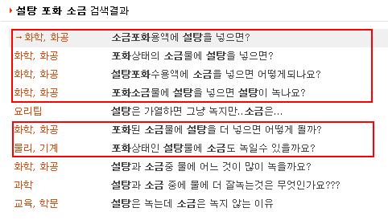

[네이버 지식검색 '설탕 포화 소금' 검색 결과]
소금 포화용액에 설탕을 넣으면? (혹은 '설탕 포화용액에 소금을 넣으면?')
이 질문에 대해 채택된 7건의 답변을 분류해보면 다음과 같다.
(상반된 의견이 복수채택된 경우도 있음. 채택되지 않은 답변들도 대체로 아래 분류에 속한다)
1. 용해도 독립설. - 3건
용해도는 용질마다 독립적으로 작용하므로 소금으로 포화된 용액이라도 설탕이 포화량만큼 용해된다.
2. 분자 크기 영향설. - 2건
자갈 틈새에 모래가 끼어들어가듯이 큰 분자의 포화용액에는 작은 분자의 용질이 용해된다. (단, 포화량만큼 용해되지는 않는다)
즉, 소금으로 포화된 용액이라도 설탕이 포화량보다 적게 용해된다.
3. 용해도 공유-석출설. - 1건
용해도는 용질에 구분없이 공유되므로 소금으로 포화된 용액에 설탕을 용해시키면 일정량의 소금이 석출된다.
4. 용해도 공유-불용해설. - 1건
용해도는 용질의 구분없이 공유되므로 소금으로 포화된 용액에 설탕을 용해시키면 용해되지 않는다.
* 이 외에도 '잘 안녹는 쪽이 석출될것 같다. 정확한건 실험을 해봐야 알 수 있다' 라는 쓰레기 답변 1건이 채택되었음.
정녕 이들이 같은 교육을 받은 사람들이란 말인가???